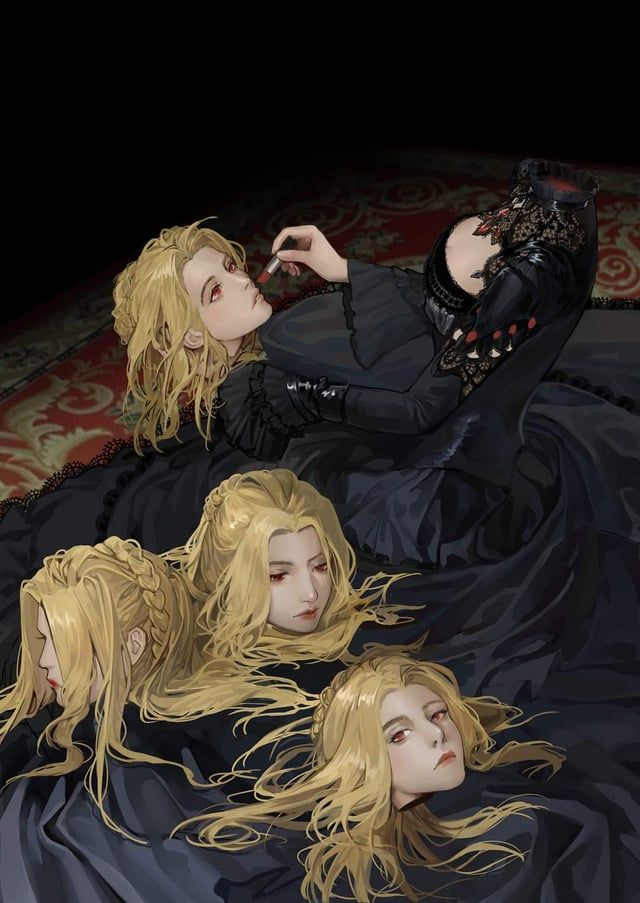

RReinette Tinekerr existe en los márgenes de todo lo que la clasificación ordinaria de los Más Allá puede contener. Su forma física —cuatro cabezas que representan aspectos distintos del Destino, cada una con su propia expresión y, en cierta medida, su propia perspectiva— no es el resultado de una maldición ni de una experimentación fallida: es simplemente lo que es, la manifestación física de algo que opera en múltiples dimensiones del ser simultáneamente.
Para quienes la encuentran por primera vez, el encuentro suele ser perturbador. No hay nada amenazante en su presencia inmediata —no hay violencia, no hay horror evidente— pero hay algo en la manera en que sus cuatro pares de ojos pueden estar mirando en cuatro direcciones diferentes, procesando cuatro conversaciones distintas, que hace que el cerebro humano proteste.
La relación de Reinette con el Club del Tarot es tan peculiar como ella misma. No es exactamente miembro, no es exactamente aliada externa: opera en un espacio entre categorías que el Club ha aprendido, con cierta humildad, a no intentar definir demasiado. Ofrece servicios, proporciona información y, en ocasiones, interviene de maneras que solo tienen sentido retrospectivamente.
"El Destino no es una fuerza ciega. Es una obra en progreso, y quienes saben leerla pueden, en los márgenes, añadir alguna que otra nota al margen."
Su relación con Mr. Fool —al que, significativamente, trata con más cuidado del que trata a la mayoría— sugiere que ella percibe en Klein algo que va más allá de lo que él mismo comprende de su situación. Lo que exactamente ve es algo que prefiere guardar para sí misma.
Reinette no comunica de la manera en que los humanos esperan. Sus cuatro cabezas pueden hablar simultáneamente, completarse mutuamente o contradecirse —aunque esas contradicciones, examinadas de cerca, suelen revelar perspectivas complementarias más que posiciones opuestas. Hay una lógica en ella, pero no es una lógica que se presente ordenadamente.
No es cruel. Tampoco es benevolente en el sentido ordinario del término. Es... ecuánime, de una manera que resulta a veces consoladora y otras veces profundamente inquietante: la ecuanimidad de alguien que ve el tapiz completo y ha aprendido a vivir con esa visión.
El Camino del Destino es uno de los más raros y temibles del mundo. Sus portadores desarrollan una relación cada vez más profunda con los hilos que conectan causas y efectos, personas y eventos, pasado y futuro. En niveles superiores, un Tejedora del Destino no predice el futuro: lo negocia, ajusta los hilos, tira de unos para aflojar otros.
Reinette opera en un nivel que hace que incluso estas descripciones suenen insuficientes. Es uno de esos seres respecto a los cuales la honestidad más apropiada es admitir que el alcance completo de sus capacidades es, fundamentalmente, desconocido para los demás personajes —y posiblemente para el lector también.